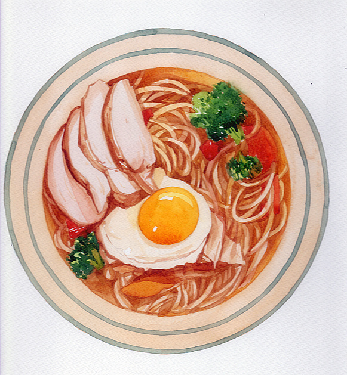

意大利面，也被称为意粉，是西餐正餐中最接近中国人饮食习惯的面点。意大利面条有很多种类，每种都有自己的名称，长短有差，其空心的种类被部分汉语使用者称为通心粉。
关于意大利面条的起源，有说是源自古罗马，也有的说是由马可·波罗从中国经由西西里岛传至整个欧洲的讲法。 作为意大利面的法定原料，杜兰小麦是最硬质的小麦品种，具有高密度、高蛋白质、高筋度等特点，其制成的意大利面通体呈黄色，耐煮、口感好。
意大利面根据种类形状也各不相同，除了中国人认为是面条的的直身粉外还有螺丝型的、弯管型的、蝴蝶型的、空心型，贝壳型的林林总总数百种。
